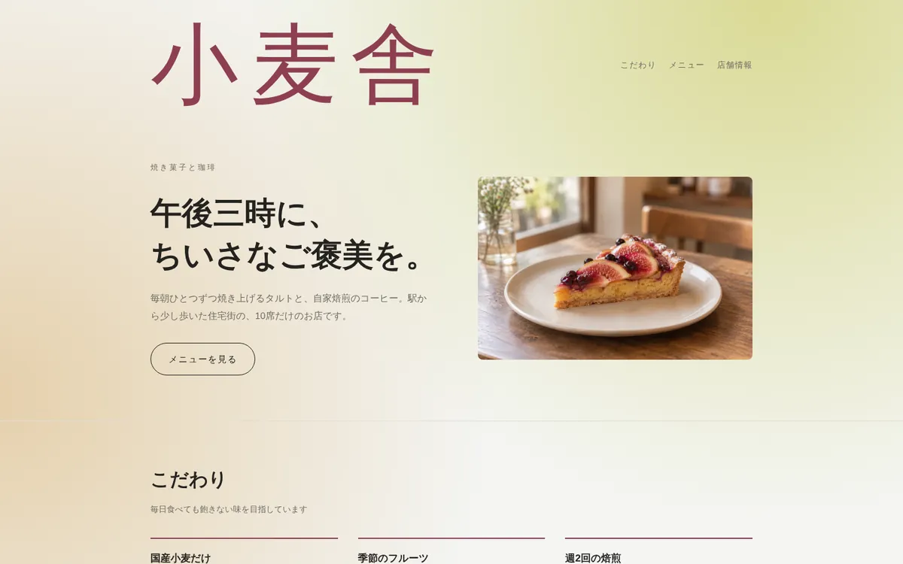
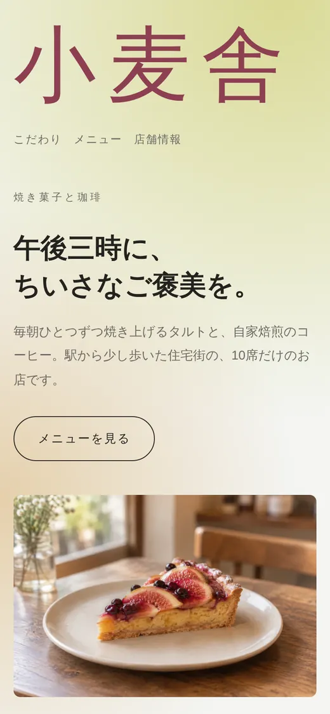

焼き菓子と珈琲「小麦舎」
住宅街にある10席だけのカフェの紹介サイト。手づくりのお菓子屋らしいやわらかさと、写真の見せ方にこだわりました。
- 区分
- 自主制作
- 種類
- 店舗サイト（1ページ）
- 担当
- 構成・デザイン・実装
- 対応
- PC・スマホ・ダークモード


Overview背景・目的・ターゲット
- 制作背景
- 駅から少し歩いた住宅街にある、焼き菓子と自家焙煎コーヒーのお店を想定しました。小さなお店はSNSだけで情報を出していることが多く、営業時間やメニューを調べにくいという課題があります。そこで、お店の雰囲気とメニュー・営業情報が1ページでわかるサイトを作りました。
- 目的
- 「行ってみたい」と思ってもらい、営業時間と場所を確認してそのまま来店してもらうこと。
- ターゲット
- 近所に住む20〜40代。仕事帰りや休日に、落ち着いて甘いものを食べられる場所を探している人。スマホで見る人がほとんどだと考えました。
Conceptデザインの考え方
「午後三時の、ちいさなご褒美」がテーマです。焼き菓子のあたたかさが伝わるよう、見出しはペンで書いたような手書き風の書体、本文は読みやすいゴシック体に分けました。ロゴだけは古い看板のような書体にして、お店の顔として目立たせています。
配色
- #8E3F52： ベリー（アクセント）
- #F4F5F3： 背景
- #24221F： 文字
- #BFBE36： 背景の光（オリーブ）
- #D6AA64： 背景の光（小麦色）
書体
Klee One（見出し）／ Zen Kaku Gothic New（本文）／ Zen Antique（ロゴ）
Process制作の流れ
- 構成と最初のデザインこだわり・メニュー・店舗情報の3つに絞り、1ページで完結する構成にしました。最初は写真なしで、タルトをCSSで描いて仮置きしました。
- 写真を入れて表示を確認AIで作った写真を入れたところ、写真が縦に伸びて表示される不具合が見つかりました。原因は
height: autoの指定漏れで、CSSを1行足して直しました。 - 画像の軽量化PNGの写真4枚で約8MBあったので、WebP形式に変換して約360KBまで軽くしました。スマホで開いたときの待ち時間が大きく減ります。
- 書体と動きの調整見出しとロゴの書体を分け、スクロールで写真がふわっと出る動きを控えめに入れました。
- 背景とロゴの仕上げ背景に2色の光のグラデーションを入れ、ロゴの大きさを画面幅に合わせて変わるようにしました。色と大きさは自分で数値を変えて、スマホとPCで見比べながら決めました。
制作にはAIツール（Claude・ChatGPT）を使い、表示の確認と修正、色や大きさの調整は自分で行いました。写真はAIで生成した画像です。
Tech使用技術・実装した機能
- 画面幅に合わせた文字の大きさ
clamp()を使い、ロゴや見出しがスマホでは小さく、PCでは大きくなるようにしました。 - スクロールで写真を表示IntersectionObserver で写真が画面に入ったときだけ表示します。画面の外の写真にだけ動きをつけるので、最初の表示はすぐに終わります。
- ダークモード対応色をすべてCSS変数で管理し、端末の設定に合わせて暗い配色に切り替わります。
- 動きを減らす設定への対応OSで「視差効果を減らす」を選んでいる人には、アニメーションを止めます。
/* 画面幅に合わせてロゴの大きさを変える */
.logo {
font-size: clamp(70px, 25vw, 140px);
/* 最小70px・基本は画面幅の25%・最大140px */
}